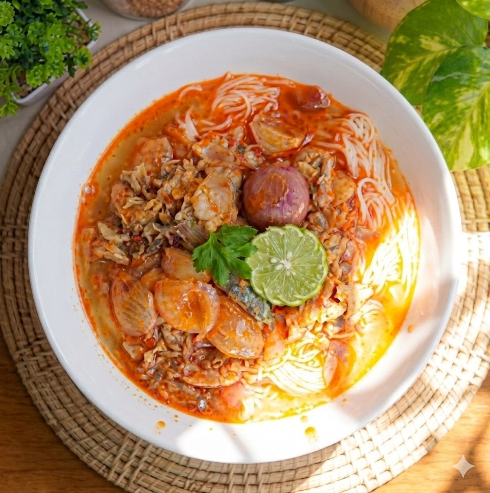

ထားဝယ်စစ်လက်သုပ် (သို့မဟုတ်) စစ်လက်သောက် သည် ချဉ်၊ စပ်၊ မွှေး အရသာရှိပြီး ထားဝယ်ဒေသ၏ နာမည်ကြီး ရိုးရာအစားအစာတစ်ခု ဖြစ်သည်။ အဓိကအားဖြင့် ငါးခူ (သို့မဟုတ်) ငါးကျည်းဖြင့် ချက်လုပ်ထားသော ငါးအနှစ်အနှစ်ဆမ်းပြီး သုပ်စားရသော မုန့်တီသုပ် ဖြစ်သည်။ပြုလုပ်နည်း အဆင့်ဆင့်ကို အောက်တွင် ဖော်ပြပေးထားပါသည်။
ငါးကို စပါးလင်၊ ပအုန်းရည်၊ ငါးပိအနည်းငယ်တို့ဖြင့် နူးအိအောင် ပြုတ်ပါ။ငါးနူးပါက အအေးခံပြီး အရိုးနွှင်ကာ အသားများကို ထောင်းထား သို့မဟုတ် အမွှာမွှာ ခြေထားပါ။ငါးပြုတ်ရည်ကို သွန်မပစ်ဘဲ ချန်ထားပါ။
ငရုတ်သီးခြောက် ၊ အရောင်တင်မှုန့်၊ ကြက်သွန်ဖြူ၊ ကြက်သွန်နီတို့ကို ညက်နေအောင် ထောင်းပါ။စချက်ဖို့အတွက် အိုးထဲကို ဆီထည့်ပါ။ ဆီပူလာလျှင် နနွင်းမှုန့်
အနည်းငယ် ကိုထည့်ပီး ထောင်းထားတဲ့ ငရုတ်သီးခြောက်၊ ကြက်သွန်ဖြူ၊ ကြက်သွန်နီနှင့်တို့ကို ထည့်ပီး ဆီသတ်ပါမယ်။ပီးရင် ကြက်သွန်နီကို အခွံနွှာပီး အတုံးလိုက်
သို့မဟုတ် ငယ်ရင် အလုံးလိုက် ထည့်ပါ။ ဆီသတ်ပြီး မွှေးလာလျှင် အရိုးနွှင်ပြီး ချေထားတဲ့ငါးကို ထည့်ပါ။အနံ့မွှေးလာလျှင် ပြုတ်ပြီးချန်ထားတဲ့ ငါးပြုတ်ရင်ကို ထည့်ပါ။
ပြီးရင် သမအောင်မွှေပြီး လိုအပ်လျှင် ရေကို လိုသလောက် ထည့်နိုင်ပါသည်။ပြီးရင် အဖုံးအုပ်ပြီး ပွက်ပွက်ဆူအောင် ချက်ထားပေးရပါမည်။
ဆား၊ အသားမှုန့်အနည်းငယ်၊သကြားပါတာ ကြိုက်လျှင် သကြားအနည်းငယ် ထည့်၍ အရသာကို ကိုယ့်စိတ်ကြိုက်ပြင်ဆင်နိုင်ပါသည်။
မုန့်လက်သုပ်နဲ့ ကွာခြားချက်မှာ
ဆီ၊ငရုတ်သီးခြောက်၊ ငါးပိ ပါခြင်းဖြစ်သည်။
ပန်းကန်ထဲထည့်ခြင်း - ပန်းကန်လုံးထဲသို့ မုန့်တီဖတ် အနေတော် ထည့်ပါ။
အနှစ်ဆမ်းခြင်း - ချက်ထားသော ငါးအနှစ်ဟင်းရည် ပူပူကို မုန့်ဖတ်ပေါ်သို့ ဆမ်းပါ။
အုပ်ရန် - အပေါ်မှ ငရုတ်သီးစိမ်း၊ ငရုတ်မှုန့်၊ နံနံပင် သို့မဟုတ်
ကြိုက်နှစ်သက်ရာ အသီးအရွက်ကို ညှပ်ထည့်ပါ။
သုံးဆောင်ရန် - အားလုံးကို သေချာနှံ့အောင်မွှေပြီး ချဉ်ချဉ်စပ်စပ် ပူပူလောလော သုံးဆောင်နိုင်ပြီ ဖြစ်သည်။